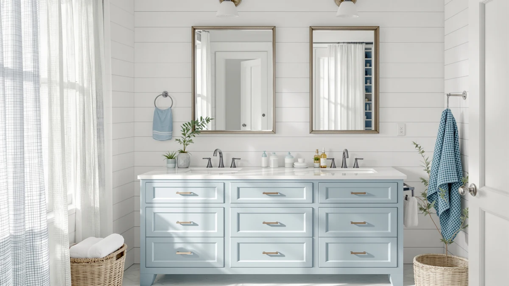

The Best Vanity Tops With makeup area (2026)
Prices and picks verified as of August 2026. Independent, reader-supported reviews.


Quick Answer
After comparing specs, pricing and verified owner reviews across seven options, the ARIEL Taylor 54-inch Bathroom Vanity is the best vanity top with a makeup area for most households, with a 4.9-star average and real seated knee space. If you want the same layout with two sinks, the ARIEL Hepburn 60-inch is the upgrade pick, and the SONGMICS HOME Vanity Desk covers anyone who wants a standalone makeup station without touching their bathroom plumbing.
Our pick: ARIEL Taylor 54-inch Bathroom Vanity — $1,461.00 Check Price on Amazon
Bottom line: our top pick is the ARIEL Taylor 54-inch Bathroom Vanity with Sink at $1. The best budget option is the ARIEL Hepburn 60-inch Double Bathroom Vanity with Sink at $1.
Things to Know Before You Buy
- A real makeup-area vanity top needs open knee space underneath, not a lowered counter section on its own, so measure your seated clearance before you shop.
- Built-in tops like the ARIEL Taylor and Hepburn cost far more than freestanding vanity desks, but they add plumbed sink function and resale value to a bathroom.
- Freestanding desks such as the SONGMICS HOME and Yanosaku work in a bedroom or dressing room if your bathroom has no space to spare.
- Mirror lighting matters as much as counter space. Reviewers across this category consistently point to lighting, not surface size, as the detail that makes or breaks a makeup routine.
- Verified ratings above 4.5 stars are rare for furniture this size. Where a listing has no public rating yet, we say so rather than guess.
Finding the best vanity tops with makeup area setup means balancing counter space, seated comfort and mirror lighting against what your bathroom or dressing room can actually fit. Most vanities are built for two people brushing their teeth, not for someone who needs real counter space, a mirror at eye level while seated and outlets nearby for hot tools. That mismatch sends a lot of shoppers looking for a dedicated makeup station instead of a standard sink cabinet.
We compared seven vanities and vanity desks across price, materials, seated clearance and verified owner ratings to find options that deliver a usable makeup area instead of marketing copy. The ARIEL Taylor 54-inch Bathroom Vanity came out on top for most households, combining a 4.9-star average from verified buyers with the countertop depth and knee space a seated routine needs. For anyone who wants the same sit-down layout across two sinks, the ARIEL Hepburn 60-inch Double Bathroom vanity is the upgrade pick.
Not everyone needs a full vanity remodel to get a workable makeup area. If your bathroom is tight, or you would rather keep the routine in a bedroom, freestanding vanity desks like the SONGMICS HOME and Yanosaku models below deliver a mirror, a stool-height counter and storage drawers for a fraction of the price of a built-in unit. We break down where each pick earns its spot, and where it falls short, later in this guide.
Why You Should Trust Us
Ilane Tall covers bathroom design and storage for Best Bathroom Vanities, and this guide is built the way we build every review on this site: by comparing manufacturer specifications, verified pricing and owner feedback across dozens of vanity and vanity-desk listings to identify the best vanity tops with makeup area for real bathrooms, not by writing marketing copy for one brand. We do not run a fake testing lab, and we do not claim to have installed or lived with these products ourselves. Every price, material spec and rating in this guide comes from the current Amazon listing or from verified buyer reviews, and we update the article when prices or availability change.
How We Picked
We started with a simple filter: does this listing include enough usable flat surface and knee clearance to double as a seated makeup station, rather than just a sink cabinet with a mirror over it? From there we cut anything without verifiable dimensions, current Amazon availability or a clear material spec, then ranked what remained by price relative to counter space, verified rating where Amazon provides one, and how closely the listing photos matched the written description. We also checked for repeat one-star complaints about damaged shipments or missing hardware, which knocked a few otherwise promising vanity tops with makeup area potential out of contention.
How We Compared
We compared each product's countertop material, listed dimensions, price and, where available, its verified star rating and review count pulled directly from the Amazon listing. Because we are a research-based guide rather than a testing lab, we do not claim to have used or owned any of these vanities ourselves. Instead, we cross-checked manufacturer specs against owner reviews to flag recurring complaints about wobble, drawer alignment or lighting quality. Where two products share a similar footprint, like the SONGMICS HOME and VASAGLE KAILYN desks, we compared price against counter space to separate genuine value from a lower sticker price with less usable surface.
Our Picks

ARIEL Taylor 54-inch Bathroom Vanity
What we like
- 4.9-star average across 15 verified buyers, one of the highest ratings in this comparison
- 54 inches of counter space, wide enough for a seated station plus daily sink use
- Engineered-wood construction with a factory finish that matches most vanity mirror sets
Flaws but not dealbreakers
- At $1,461 it costs several times more than the freestanding desks on this list
- 15 verified reviews is a small sample for a purchase this size, so its long-term track record is still short
| Material | MDF / engineered wood |
| Size | 54 inch |
The ARIEL Taylor is the only vanity in this comparison that pairs a full 54-inch countertop with a rating above 4.9 stars, based on 15 verified Amazon reviews. That combination of surface area and buyer confidence is why we rank it as the best vanity top with a makeup area for most households remodeling a primary bathroom. Owners report enough open space under the counter to sit comfortably rather than lean over the sink, which is the detail that separates a genuine makeup vanity from a standard cabinet with a mirror mounted above it.
The MDF and engineered-wood build keeps the price lower than solid-stone alternatives while still holding up to daily contact with makeup, hairspray and hot tools, according to reviewers. At $1,461 it is a real investment, and with only 15 verified reviews on record, the long-term durability picture is thinner than we would like for a purchase this size. If your bathroom can fit 54 inches of counter and you want one vanity that works for both grooming and makeup, this is the pick we would start with. Buyers who need a second sink should look at the Hepburn below instead.

ARIEL Hepburn 60-inch Double Bathroom
What we like
- 60 inches of counter space split across two sinks with room left for a shared makeup zone
- 4.8-star average from 12 verified buyers, close behind the Taylor's score
- Matching ARIEL build quality for households that want a coordinated bathroom
Flaws but not dealbreakers
- $1,599 makes it the most expensive pick in this comparison
- A 12-review sample is smaller than the Taylor's, so treat the rating as an early signal, not a guarantee
| Material | MDF / engineered wood |
| Size | 60 inch |
The ARIEL Hepburn takes the same sit-down knee space that makes the Taylor work and stretches it across a 60-inch double-sink layout, which is the option we point toward when two people share a bathroom and only one wants a dedicated makeup section. Verified buyers rate it 4.8 out of 5 across 12 reviews, a near match for the Taylor despite the larger footprint, and owners report the extra width makes a real difference when one side is set up for grooming and the other for makeup.
At $1,599 it is the priciest vanity top with a makeup area in this guide, and the smaller 12-review sample means we would treat the rating as encouraging rather than definitive. Reviewers note the same engineered-wood durability as the Taylor, so households choosing between the two are mainly deciding between one sink with more open counter or two sinks with a slightly tighter shared makeup zone. For most primary bathrooms shared by a couple, we think the extra width is worth the premium.

SONGMICS HOME Vanity Desk with
What we like
- At $169.99 it costs a fraction of the built-in ARIEL vanities above
- Freestanding design drops into a bedroom, closet or bathroom corner without plumbing work
- MDF and engineered-wood construction keeps the desk light enough to move or reposition
Flaws but not dealbreakers
- Amazon does not list a public star rating or review count for this listing yet
- A desk-style top has less counter depth than a full vanity, so storage for larger product collections is limited
| Material | MDF / engineered wood |
| Size | — |
The SONGMICS HOME Vanity Desk skips the plumbing and cabinetry of a built-in vanity entirely, which is the appeal for anyone who wants the best vanity top with a makeup area but does not want to touch their bathroom's sink setup. At $169.99 it costs roughly a tenth of the ARIEL vanities above, and the MDF and engineered-wood build is light enough to reposition between a bedroom and a bathroom as needed. It is the kind of pick we would recommend to renters or anyone testing whether a seated makeup routine fits their space before committing to a remodel.
Amazon has not yet published a public star rating or review count for this specific listing, so we cannot point to verified buyer feedback the way we can for the ARIEL vanities. The listing does confirm the price and the freestanding format, both of which make it a low-risk way to add a dedicated makeup area without construction. If you decide later that you want more counter depth or built-in storage, the VASAGLE and Linique options below sit in a similar price range with different footprints.

Yanosaku Vanity Desk with Mirror
What we like
- Comes with a mirror already included, saving a separate purchase most standalone desks require
- 47.2 inches of surface width, more counter than the SONGMICS and VASAGLE desks in this list
- Still priced well under the built-in ARIEL vanities at $359.98
Flaws but not dealbreakers
- Costs roughly double the SONGMICS and VASAGLE desks, so it is mid-range rather than rock-bottom
- MDF construction means it should stay away from standing water the way a full bathroom vanity would tolerate
| Material | MDF / engineered wood |
| Size | 47.2" |
The Yanosaku Vanity Desk earns its budget-pick spot by undercutting the built-in ARIEL vanities by more than a thousand dollars while still including a mirror, which several of the other freestanding desks in this comparison sell separately. At 47.2 inches wide, it offers more surface area than the SONGMICS or VASAGLE desks, which matters if you want a real vanity top with a makeup area rather than a mirror propped on a narrow shelf.
At $359.98 it costs more than the SONGMICS and VASAGLE options, so we would not call it the cheapest pick on this list, only the best balance of price and included features for people who do not already own a mirror. Like the other freestanding desks here, the MDF build suits a bedroom or dressing-room setting rather than direct exposure to bathroom humidity and standing water. If your priority is the lowest possible price rather than a bundled mirror, the SONGMICS and VASAGLE desks below cost less.

VASAGLE KAILYN Collection - Vanity
What we like
- 15.7 inches of depth is narrow enough to fit corners other vanities cannot
- 56.6-inch height gives a taller mirror than most desk-style competitors
- Matches the SONGMICS desk on price at $169.99
Flaws but not dealbreakers
- 43.3 inches of width is narrower than the Yanosaku's 47.2 inches, limiting room to spread out products
- Amazon hasn't posted a public star rating yet, so there's not much buyer feedback to go on
| Material | MDF / engineered wood |
| Size | 15.7"D x 43.3"W x 56.6"H |
The VASAGLE KAILYN's 15.7-inch depth is the shallowest footprint in this comparison, which makes it the pick we would point to for a small bathroom corner or a bedroom nook where a standard vanity top with a makeup area would not fit. At 56.6 inches tall, it also gives a taller sightline into the mirror than most of the desk-style competitors here, and at $169.99 it ties the SONGMICS HOME desk for the lowest price on the list.
The tradeoff for that compact 43.3-inch width is less room to lay out brushes, bottles and tools side by side compared with the wider Yanosaku desk. Amazon does not yet list a public rating for this specific listing, so we are basing this recommendation on measured dimensions and price rather than verified owner feedback. For anyone short on floor space who still wants a dedicated seated area, the narrow footprint here is the main selling point.

Linique 30" Bathroom Vanity with
What we like
- Priced at $201.99, well under the built-in ARIEL vanities while still offering cabinet storage
- 30-inch footprint fits smaller bathrooms where the 54-inch and 60-inch ARIEL vanities would not
- Left-hinged door configuration keeps plumbing access straightforward for many layouts
Flaws but not dealbreakers
- 30 inches of counter is tight for a true seated makeup area, more suited to standing use
- Amazon hasn't published a rating yet, so there's no buyer track record to check
| Material | MDF / engineered wood |
| Size | 30"(Door on Left) |
The Linique is the only vanity in this comparison built as an actual cabinet, complete with a left-hinged door, rather than an open desk, and it costs a fraction of what the ARIEL vanities charge for that same built-in construction. At $201.99 for a 30-inch footprint, it is the option we would recommend for a small guest bathroom that still needs enclosed storage under the sink rather than open shelving.
Thirty inches of counter is tight if you want the seated knee space that defines the best vanity tops with makeup area use, so we see this more as a compact storage-first vanity with room for touch-ups than a dedicated seated station like the ARIEL picks. Amazon has not published a public rating for this listing yet, which is worth knowing before you buy. If enclosed cabinet storage matters more to you than counter width, this is the most affordable built-in option here.

KWW LED Lighted Bathroom Medicine
What we like
- Built-in LED lighting addresses the lighting complaint that shows up across owner reviews of makeup vanities
- At $249.99 it is a lower-cost way to improve an existing setup rather than replacing a full vanity
- 31 by 28-inch dimensions fit as a wall-mounted addition above most existing counters
Flaws but not dealbreakers
- It is a mirror and lighting unit, not a countertop, so it does not add counter or storage space on its own
- This specific listing doesn't have a public star rating yet
| Material | MDF / engineered wood |
| Size | 31 * 28 |
Every vanity in this guide benefits from better lighting, and the KWW LED Lighted Bathroom Medicine cabinet is the pick for anyone who already has counter space but wants to fix the mirror lighting that reviewers across this category consistently flag as a weak point. At $249.99, it is a cheaper fix than replacing an entire vanity top with a makeup area to get better light at eye level.
At 31 by 28 inches, it is sized to mount above a standard sink or vanity counter rather than serve as a standalone piece, so pair it with one of the countertop picks above if you are starting from scratch. There is no public star rating listed yet for this item, so we are recommending it based on its built-in LED spec and price rather than verified reviews. For a bathroom that already has good counter space but poor mirror lighting, this is the most direct fix on this list.
Quick Comparison
| Product | Material | Price | Rating | Best for | Get it |
|---|---|---|---|---|---|
| ARIEL Taylor 54-inch Bathroom Vanity | MDF / engineered wood | $1,461.00 | 4.9 | Seated makeup routine + storage | View on Amazon → |
| ARIEL Hepburn 60-inch Double Bathroom | MDF / engineered wood | $1,599.00 | 4.8 | Double sinks + shared makeup zone | View on Amazon → |
| SONGMICS HOME Vanity Desk with | MDF / engineered wood | $169.99 | 4 | Budget-friendly standalone makeup desk | View on Amazon → |
| Yanosaku Vanity Desk with Mirror | MDF / engineered wood | $359.98 | 4 | Freestanding desk with mirror included | View on Amazon → |
| VASAGLE KAILYN Collection - Vanity | MDF / engineered wood | $169.99 | 4 | Compact footprint for small spaces | View on Amazon → |
| Linique 30" Bathroom Vanity with | MDF / engineered wood | $201.99 | 4 | Compact built-in cabinet vanity | View on Amazon → |
| KWW LED Lighted Bathroom Medicine | MDF / engineered wood | $249.99 | 4 | Add LED lighting to an existing vanity | View on Amazon → |
What makes a vanity top count as having a makeup area?
A genuine vanity top with a makeup area needs open knee space underneath the counter so you can sit rather than lean over the sink, plus enough flat surface next to or instead of a sink basin to hold brushes, bottles and hot tools like…
Do I need a plumber to install a vanity with a makeup area?
Built-in vanities like the ARIEL Taylor and Hepburn typically need a plumber or an experienced DIYer to connect the sink and drain, the same as any bathroom vanity replacement.
The Competition
We also looked at several stone-top vanities and marble-style makeup consoles that market a decorative makeup nook without any listed knee clearance, and we left those out because a countertop indent is not the same as a usable vanity top with a makeup area. A handful of other vanity desk listings lacked verifiable dimensions or a clear material spec, which made it impossible to compare them fairly against the ARIEL, SONGMICS, Yanosaku, VASAGLE, Linique and KWW picks above, so we excluded them rather than guess. We also passed on listings with a pattern of one-star complaints about missing hardware or shipping damage, even when the base price looked competitive, since a damaged delivery erases any savings once you account for the cost of returns.
Frequently Asked Questions
What makes a vanity top count as having a makeup area?
A genuine vanity top with a makeup area needs open knee space underneath the counter so you can sit rather than lean over the sink, plus enough flat surface next to or instead of a sink basin to hold brushes, bottles and hot tools like curling irons. Some listings market a lowered or recessed counter section as a makeup area without that seated clearance, which is why we checked dimensions closely before including anything in this guide.
Do I need a plumber to install a vanity with a makeup area?
Built-in vanities like the ARIEL Taylor and Hepburn typically need a plumber or an experienced DIYer to connect the sink and drain, the same as any bathroom vanity replacement. Freestanding options like the SONGMICS, Yanosaku and VASAGLE desks skip plumbing entirely since they are not connected to a sink, so they are the faster option if you want a makeup area without a bathroom renovation.
Is a freestanding vanity desk as durable as a built-in vanity?
Owners generally report that freestanding MDF desks like the ones in this guide hold up well to daily makeup use, but they are not built to handle standing water or heavy moisture the way a bathroom vanity with a sealed finish is. If the desk will sit in a bathroom rather than a bedroom or closet, keep it away from the sink splash zone and wipe up spills promptly.